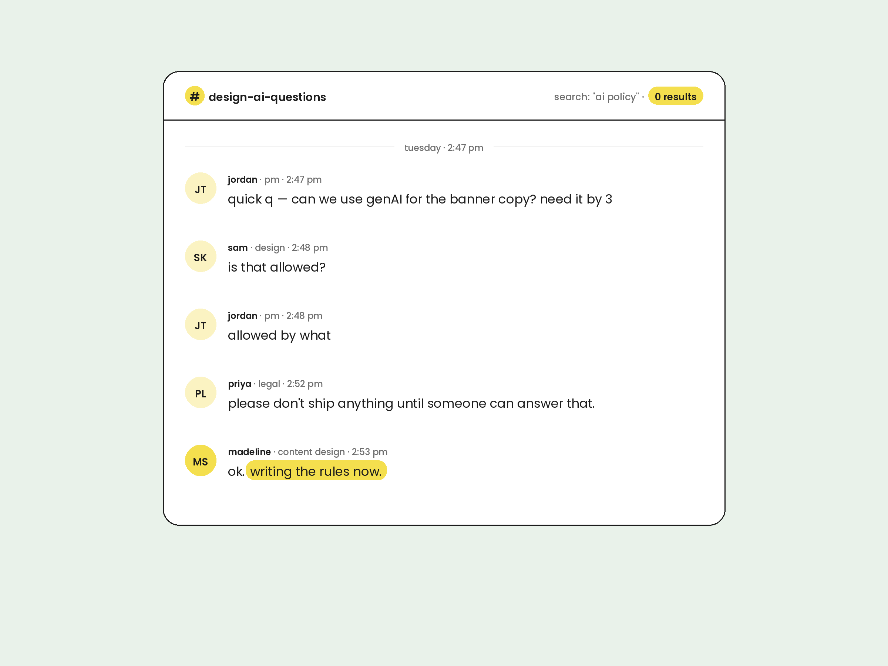

Hey there.
After nine years, three jobs, one pandemic and a thousand meetings later, I’m back in Melbourne.
Consider this my CV in long form. Here’s how it went down.
(See my actual CV right here)

Where the story starts
This story starts at Redbubble, a Melbourne company with a mission to support a global community of independent artists. I spent 5 years promoting artists to new and existing fans, and was the voice behind our social media accounts that spoke to a community of over 1M.
In 2013 we were a young brand with a developing voice and identity. By 2017 I had moved to the Bay Area to help our brand leap beyond the e-commerce noise machine. We were host to an artist in residence program, a highly-engaged fan community, and a robust learning center to help artists grow and nurture our marketplace. This was peak ‘startups are unstoppable’ era and I was there for the best of it.
Fig. 1 — Hills, by commute
Hill (n.): any incline requiring a gear change, mental or bicycle.
Making water interesting
I figured the local-brand-to-global-company pipeline should continue, so I became the lead copywriter for a Bay Area brand trying to make it big.
Our job was to make water (boring) seem fun and exciting, in a crowded room with a recent rebrand and little brand-recognition. We pushed our brand and creative storytelling through in-store, online and direct-to-consumer channels, then decided to go BIG and make a Super Bowl commercial.
Hint is now the largest privately-owned non-alcoholic beverage company in the US (a mouthful, just like the water).
Fig. 2 — “You’re still on mute” moments, annually
Incidents counted in both directions.
The Big Tech cliché
I decided it was time to fulfill the Silicon Valley cliche and get a job in Big Tech. It was mid-pandemic, the world was mostly at home and we saw online communities forming around niche interests with a desire to connect. Algorithmic feeds were getting stale, so this is where Messenger could solve some problems.
Fig. 3 — Instances of “circling back,” annually
Written and verbal. Self and others, within earshot.
We built a brand new public-messaging product from the ground up, connecting people to interest-based communities through instant messaging. To make this interesting, we did this while also moving Messenger towards an end-to-end encrypted service, so the complexities were real and the legal team thought we were insane.
In 2022, Messenger Communities was publicly launched personally by Mark Z and soon accounted for 30% of all Messenger sends. This was great until we realized that Messenger was drifting users away from the broader Meta ecosystem. We then became Team Fix-It with months of war rooms, emergency design sprints and late night design decks to address metrics declines. I learned truly how fast a large team could move. This job wasn’t ever boring.
AI, AI, AI, AI, AI!!!!
It was AI everywhere all at once. I worked on a suite of experimental user-facing tools, like an AI social assistant and summarization bot. This was where I learned that doubling down on simplicity and craft could lead to the best outcomes in an environment that moved at a dizzying pace.

My proudest work came in writing the governance and risk framework for how our own design teams used AI in their tooling. Everyone wanted to move quickly, so my job was to make sure this happened safely. My risk framework was approved by Meta design leads and became adopted company wide as internal teams onboarded to an AI-native workflow.
Back to the OG
Most recently, I worked for Facebook on their social team. Our job was to help people see the content their friends are posting, and was a direct ask from Meta executive leadership (sometimes they’d say jump, you get the rest). We built out a friends-only feed, taking users back to our “OG facebook” roots, alongside some throwbacks like Poke and “It’s Complicated”. We launched the Friends tab to the US in early 2025. I also learned that a 1px change can affect the company bottom line.
Fig. 4 — Layoffs survived vs. reorgs weathered, cumulative
Survived (v.): a reduction event occurred within my org and I remained employed.
What’s next?
I’ve returned to Melbourne and I’m figuring out what my next chapter will be.
Right now I could go deep into content design systems and strategy, or work horizontally across 0-1 projects and emerging tech.
I thrive in ambiguous problem spaces, I’m relentlessly curious and I learn fast.
If you’re looking for a writer-designer-UX strategist-content systems builder with an eye for systems and some stories from the water-coolers of Silicon Valley, then let’s chat.